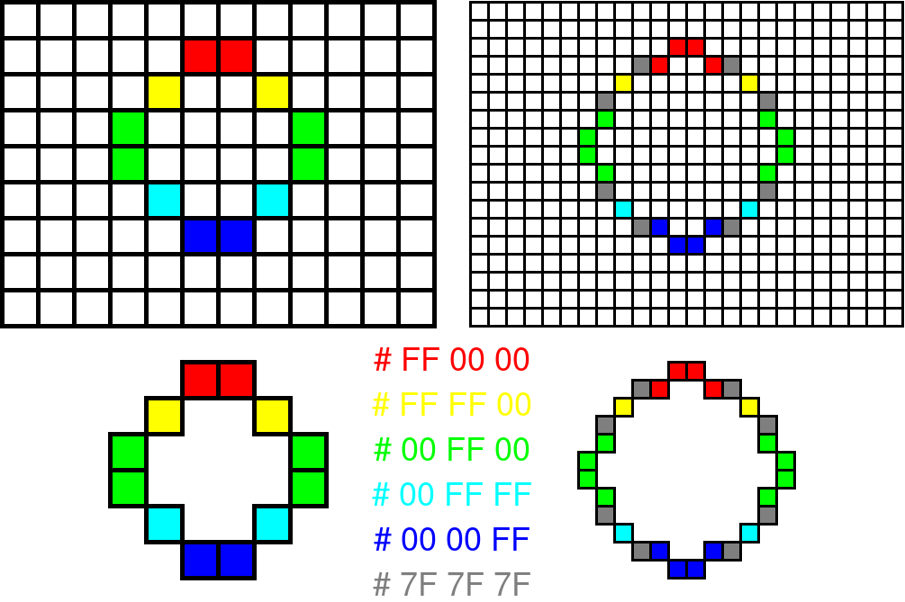
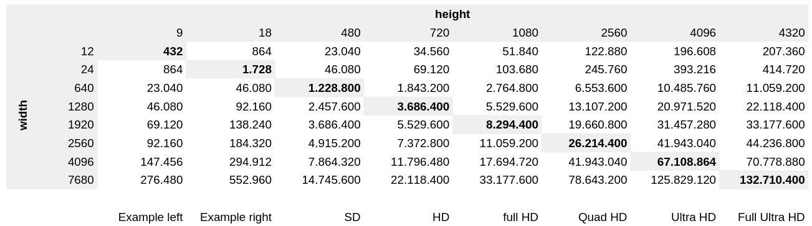

Images are everywhere. When looking at digital images (as in: not for printing) every pixel of the image has pixelvalue. Typically, the light that is generated in a pixel is composed of red light, green light, and blue light, hence RGB. To make photos or movies, some device needs to capture the light. This is done in an image sensor. For the sake of completeness, it is mentioned that there two main types of sensors: CCD and CMOS.
These sensors have receptors that record the light. The output of the sensor consists of values how much R, G, and B light is measured. This results in RGB values for each pixel. The more pixels that are available, the better the quality of the image is. In the figure, the left side has a 12 by 9 resolution and the right has a 24 by 18 resolution.
If we do some quick math, we come to the following.
It is not hard to see that the larger the resolution, the more bytes are required to store the images.

In the example above, it was assumed that every pixel is stored in 3 bytes, one for each color. This boils down to 24 bits per pixel (bpp). This is known as True color and, as of 2018, this is used by most phone displays and computers. With true color, 224 colors can be displayed, or 16'777'216 colors.
In computer graphics, it is sometimes desireable to have a transparent background. Since the late 1970’s there is the concept of an alpha channel. This is a value that indicates how opaque a pixel is: entirely transparent (0) or entirely opaque (1). This alpha value is also stored with the R, G, and B values of the pixel. Up until now, a single pixel used 24 bits. With the addition of an 8-bit alpha channel, the total number of bits per pixels is 32. Cool, a power of 2 😃
The images above serve to illustrate the concept of pixels and resolutions. Of course there are predefined resolutions. Some of the most well known resoltions (width x height) are listed here:

This table calculates how many bytes are required to store an image of a certain resolution, given that every pixel is represented by 4 bytes. Take a look at that Full Ultra HD file: 132'710'400 bytes. That is 132 MB!!